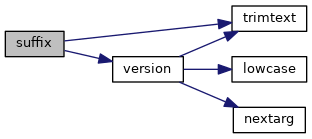
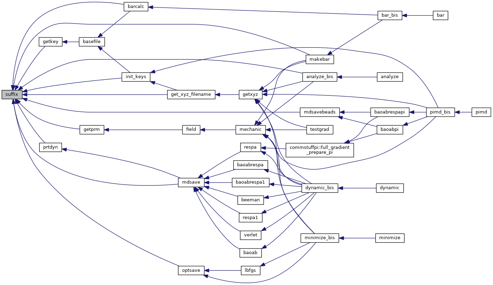

|
Tinker-HP v1.3
|
|
Tinker-HP v1.3
|
Go to the source code of this file.
Functions/Subroutines | |
| subroutine | suffix (filename, extension, status) |
| checks a filename for the presence of an extension, and appends an extension and version if none is found More... | |
| subroutine suffix | ( | character*(*) | filename, |
| character*(*) | extension, | ||
| character*3 | status | ||
| ) |
checks a filename for the presence of an extension, and appends an extension and version if none is found
| [in] | filename,: | name of file |
| [in] | extension,: | extension of file |
| [in] | status,: | status |
Definition at line 23 of file suffix.f90.
References trimtext(), and version().
Referenced by analyze_bis(), barcalc(), get_xyz_filename(), getkey(), getprm(), init_keys(), makebar(), mdsave(), mdsavebeads(), optsave(), and prtdyn().


 1.8.5
1.8.5